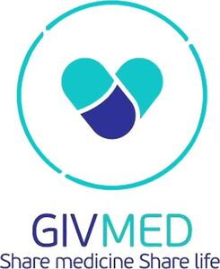

Trade Mark Journal No.2025/032 8 August 2025
WO0000001866400 (9,35,36,41,44,45)
Office of origin: European Union Intellectual Property Office (EUIPO)
Date of International Registration:11 March 2025
Date of designation in the UK:
11 March 2025

The mark contains the colours turquoise (HEX Colour Code: 12C6C8), deep blue (HEX Colour Code: 2E3197) and white (HEX Colour Code: FFFFFF).
- Class 9
- Software for Internet applications, software for mobile telephones, data analysis software, data management software, all the aforesaid goods for the purpose of searching, redistributing and delivering unused health products (including pharmaceutical products, medical technology products, herbal substances, nutritional supplements, hygiene products), the sustainable use of health products and facilitating access to health care; healthcare data management and analysis software.
- Class 35
- Database management, data management services, business data analysis services, collection and systemisation of data: all the aforesaid services for the purpose of searching, redistributing and delivering unused health products and enabling access to health care; mediation services relating to the matching of individuals or organisations with organisations for the purpose of redistributing and delivering unused health products and improving access to health care; provision of business assistance and consultancy services in relation to companies, public bodies and non-governmental organisations; business management relating to logistics support for others, in relation to the following fields: health sector; administrative coordination, in relation to the following fields: redistribution of unused health products; administrative coordination, in relation to the following fields: volunteering and fundraising activities.
- Class 36
- Organisation of charity gatherings, organisation of crowdfunding with the aim of sustainable use of health products, access to health products for those in need and improvement of health; charitable fundraising, for use in the following fields: humanitarian aid and humanitarian development; organisation of charity fundraising events.
- Class 41
- Organisation of actions to provide training services in the following fields: health.
- Class 44
- Charitable services to ensure access to health and healthcare products for patients in need, in particular through the redistribution of unused health products, such as drugs, medical devices, herbal preparations, hygiene products and nutritional supplements; organisation of campaigns in the following fields: provision of health services or improving public health; organisation of humanitarian missions to deliver unused health products.
- Class 45
- Online social networking services accessible through online and mobile applications to facilitate access to health products; organisation and conducting of social support groups, in particular advocacy, for those in need of medical and pharmaceutical services; distribution of clothing, hygiene products and health products, in relation to the following fields: humanitarian aid; social networking services accessible through a downloadable mobile application, through which drug donations are made and coordinated by individuals/users of the application to social agencies to reach people in need.
GIVMED Share medicine Share life